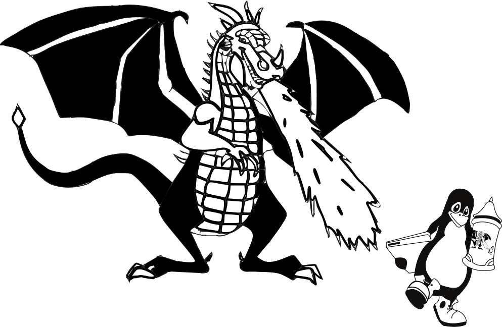

Please order your t-shirts now! The deadline has not yet been confirmed, so please get your order in as soon as possible if you would like one. To order one please email lbw2014@xn--vdaa.be with your name and the sizes you would like.
T-shirts will cost £14.50. They will hopefully be of better quality, and pleasanter to wear than your average conference shirt. The shirts we are going for are an olive green light weight fabric, hopefully ideal for summer. The design will be dyed (or screen printed if we don't sell enough). The fabric may also be organic, should you wish to eat it.
The front design will be of the dragon, below, and the back print will be the list of previous dates, as is tradition.
The shirts will be available in both men's and women's fit. The colours of the two may differ slightly.

| Small | 34—36 inch |
| Medium | 38—40 inch |
| Large | 42—44 inch |
| Extra large | 46—48 inch |
| Extra extra large | 50—52 inch |
NB. 1 inch = 2.54cm
Numbers are UK dress sizes.
| Small | 10 |
| Medium | 12 |
| Large | 14 |
| Extra large | 16 |
| Extra extra large | 18 |